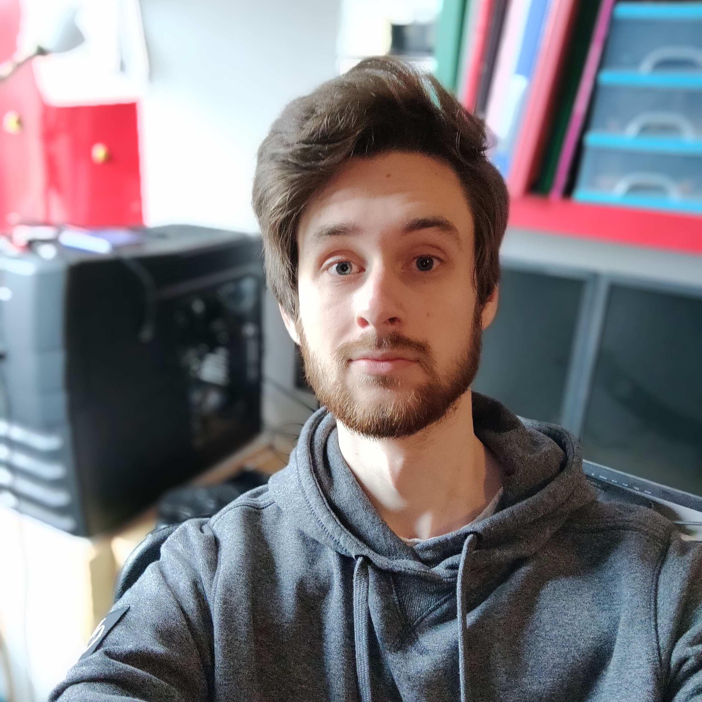

Dit ben ik:
Hi, ik ben Niels, 23 jaar oud en woon momenteel in Castricum. De afgelopen 4 jaar heb ik met matig succes geprobeert een opleiding social work te volgen. Mede dankzij corona liep dat afgelopen jaar weer niet lekker. Tijdens het plannen hoe verder te gaan kwam ik erachter dat ik de motivatie niet meer had om door te gaan, en dat het tijd was om wat anders te proberen.
In mijn vrije tijd ben ik meestal achter mijn pc te vinden. Ik game graag online met vrienden, dus in dat opzicht hou ik de lockdown goed vol. Verder geef ik met veel plezier als vrijwilliger leiding bij mijn scoutinggroep.
Tijdens mijn havo opleiding heb ik wat lopen rommelen met het schrijven van code, dus helemaal nieuw is het niet, maar ik ben absoluut een beginner.
Ik heb er zin in om te beginnen!